pyvista.LookupTable#
- class LookupTable(cmap=None, n_values=256, flip=False, values=None, value_range=None, hue_range=None, alpha_range=None, scalar_range=None, log_scale=None, nan_color=None, above_range_color=None, below_range_color=None, ramp=None, annotations=None)[source]#
Scalar to RGBA mapping table.
A lookup table is an array that maps input values to output values. When plotting data over a dataset, it is necessary to map those scalars to colors (in the RGBA format), and this class provides the functionality to do so.
See vtkLookupTable for more details regarding the underlying VTK API.
- Parameters:
- cmap
str,colors.Colormap,optional Color map from
matplotlib,colorcet, orcmocean. Eithercmaporvaluescan be set, but not both.- n_values
int, default: 256 Number of colors in the color map.
- flipbool, default:
False Flip the direction of cmap. Most colormaps allow
*_rsuffix to do this as well.- values
numpy.ndarray,optional Lookup table values. Either
valuesorcmapcan be set, but not both.- value_range
tuple,optional The range of the brightness of the mapped lookup table. This range is only used when creating custom color maps and will be ignored if
cmapis set.- hue_range
tuple,optional Lookup table hue range. This range is only used when creating custom color maps and will be ignored if
cmapis set.- alpha_range
tuple,optional Lookup table alpha (transparency) range. This range is only used when creating custom color maps and will be ignored if
cmapis set.- scalar_range
tuple,optional The range of scalars which will be mapped to colors. Values outside of this range will be colored according to :attr`LookupTable.below_range_color` and :attr`LookupTable.above_range_color`.
- log_scalebool,
optional Use a log scale when mapping scalar values.
- nan_color
color_like,optional Color to render any values that are NANs.
- above_range_color
color_like,optional Color to render any values above
LookupTable.scalar_range.- below_range_color
color_like,optional Color to render any values below
LookupTable.scalar_range.- ramp
str,optional The shape of the table ramp. This range is only used when creating custom color maps and will be ignored if
cmapis set.- annotations
dict,optional A dictionary of annotations. Keys are the float values in the scalars range to annotate on the scalar bar and the values are the the string annotations.
- cmap
Examples
Plot the lookup table with the default VTK color map.
>>> import pyvista as pv >>> lut = pv.LookupTable() >>> lut LookupTable (0x7ff3de60d580) Table Range: (0.0, 1.0) N Values: 256 Above Range Color: None Below Range Color: None NAN Color: Color(name='maroon', hex='#800000ff') Log Scale: False Color Map: "VTK lookup table" Alpha Range: (1.0, 1.0) Hue Range: (0.0, 0.66667) Saturation Range (1.0, 1.0) Value Range (1.0, 1.0) Ramp s-curve Is Opaque True >>> lut.plot()
Plot the lookup table with the
'inferno'color map.>>> import pyvista as pv >>> lut = pv.LookupTable('inferno', n_values=32) >>> lut LookupTable (0x7ff3c053f3a0) Table Range: (0.0, 1.0) N Values: 32 Above Range Color: None Below Range Color: None NAN Color: Color(name='maroon', hex='#800000ff') Log Scale: False Color Map: "inferno" >>> lut.plot()
- property above_range_color: Optional[Color]#
Return or set the above range color.
Any values above
LookupTable.scalar_rangewill be rendered with this color.Examples
Enable the usage of the above range color.
>>> import pyvista as pv >>> lut = pv.LookupTable() >>> lut.above_range_color = 'blue' >>> lut.plot()
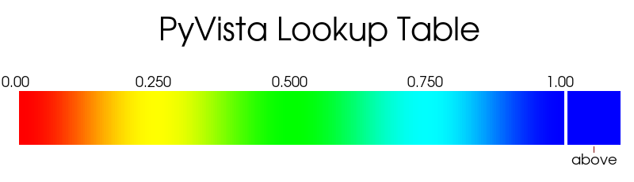 Disable the usage of the above range color.
>>> import pyvista as pv >>> lut = pv.LookupTable() >>> lut.above_range_color = None >>> lut.plot()
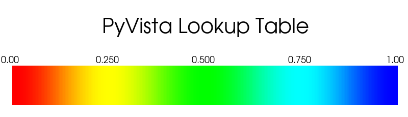
- property alpha_range: tuple#
Return or set the alpha range.
This range is only used when creating custom color maps and will return
Nonewhen a color map has been set withLookupTable.cmap.This will clear any existing color map and create new values for the lookup table when set.
Examples
Create a custom “blues” lookup table that decreases in opacity.
>>> import pyvista as pv >>> lut = pv.LookupTable() >>> lut.hue_range = (0.7, 0.7) >>> lut.alpha_range = (1.0, 0.0) >>> lut.plot(background='grey')
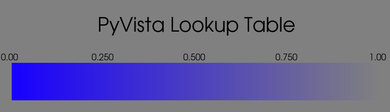
- property annotations: dict#
Return or set annotations.
Pass a dictionary of annotations. Keys are the float values in the scalars range to annotate on the scalar bar and the values are the the string annotations.
Examples
Assign annotations to the lookup table.
>>> import pyvista as pv >>> lut = pv.LookupTable('magma') >>> lut.annotations = {0: 'low', 0.5: 'medium', 1: 'high'} >>> lut.plot()
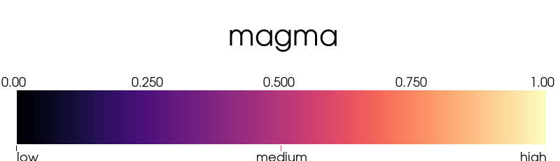
- apply_cmap(cmap, n_values: int = 256, flip: bool = False)[source]#
Assign a colormap to this lookup table.
This can be used instead of
LookupTable.cmapwhen you need to set the number of values at the same time as the color map.- Parameters:
Examples
Apply
matplotlib’s'cividis'color map.>>> import pyvista as pv >>> lut = pv.LookupTable() >>> lut.apply_cmap('cividis', n_values=32) >>> lut.plot()
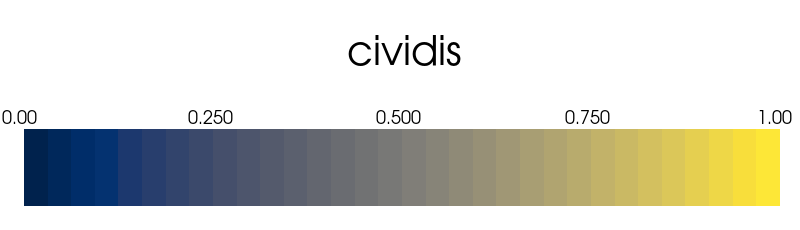
- apply_opacity(opacity, interpolate: bool = True, kind: str = 'quadratic')[source]#
Assign custom opacity to this lookup table.
- Parameters:
- opacity
float,list(float),str The opacity mapping to use. Can be a
strname of a predefined mapping including'linear','geom','sigmoid','sigmoid_3-10'. Append an'_r'to any of those names to reverse that mapping. This can also be a custom array or list of values that will be interpolated across then_colorrange for user defined mappings. Values must be between 0 and 1.If a
float, simply applies the same opacity across the entire colormap and must be between 0 and 1. Note thatintvalues are interpreted as if they were floats.- interpolatebool, default:
True Flag on whether or not to interpolate the opacity mapping for all colors.
- kind
str, default: ‘quadratic’ The interpolation kind if
interpolateisTrueandscipyis available. Seescipy.interpolate.interp1dfor the available interpolation kinds.If
scipyis not available,'linear'interpolation is used.
- opacity
Examples
Apply a user defined custom opacity to a lookup table and plot the random hills example.
>>> import pyvista as pv >>> from pyvista import examples >>> mesh = examples.load_random_hills() >>> lut = pv.LookupTable(cmap='viridis') >>> lut.apply_opacity([1.0, 0.4, 0.0, 0.4, 0.9]) >>> lut.scalar_range = (mesh.active_scalars.min(), mesh.active_scalars.max()) >>> pl = pv.Plotter() >>> _ = pl.add_mesh(mesh, cmap=lut) >>> pl.show()
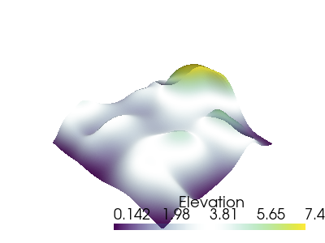
- property below_range_color: Optional[Color]#
Return or set the below range color.
Any values below
LookupTable.scalar_rangewill be rendered with this color.Examples
Enable the usage of the below range color.
>>> import pyvista as pv >>> lut = pv.LookupTable() >>> lut.below_range_color = 'blue' >>> lut.plot()
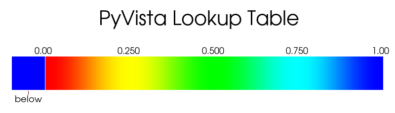 Disable the usage of the below range color.
>>> import pyvista as pv >>> lut = pv.LookupTable() >>> lut.below_range_color = None >>> lut.plot()

- property cmap: Optional[str]#
Return or set the color map used by this lookup table.
Examples
Apply the single Matplotlib color map
"Oranges".>>> import pyvista as pv >>> lut = pv.LookupTable() >>> lut.cmap = 'Oranges' >>> lut.plot()
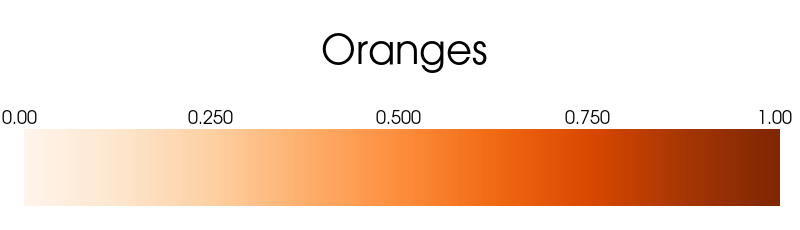 Apply a list of colors as a colormap.
>>> import pyvista as pv >>> lut = pv.LookupTable() >>> lut.cmap = ['black', 'red', 'orange'] >>> lut.plot()
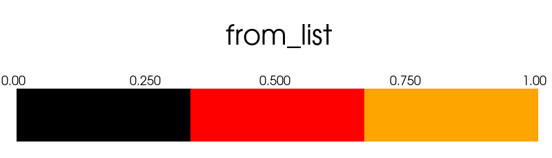
- property hue_range: Optional[tuple]#
Return or set the hue range.
This range is only used when creating custom color maps and will return
Nonewhen a color map has been set withLookupTable.cmap.This will clear any existing color map and create new values for the lookup table when set.
Examples
Set the hue range. This allows you to create a lookup table without setting a color map.
>>> import pyvista as pv >>> lut = pv.LookupTable() >>> lut.hue_range = (0, 0.1) >>> lut.plot()
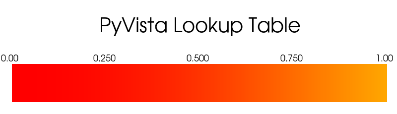 Create a different color map.
>>> import pyvista as pv >>> lut = pv.LookupTable() >>> lut.hue_range = (0.5, 0.8) >>> lut.plot()
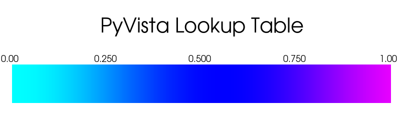
- property log_scale: bool#
Use log scale.
When
Truethe lookup table is a log scale toLookupTable.scalar_range. Otherwise, it is linear scale.Examples
Use log scale for the lookup table.
>>> import pyvista as pv >>> lut = pv.LookupTable() >>> lut.log_scale = True >>> lut.scalar_range = (1, 100) >>> lut.plot()
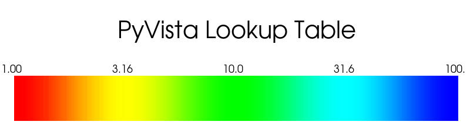
- map_value(value: float, opacity: bool = True) tuple[source]#
Map a single value through the lookup table, returning an RBG(A) color.
- Parameters:
- Returns:
tupleMapped RGB(A) color.
Examples
>>> import pyvista >>> lut = pyvista.LookupTable() >>> rgba_color = lut.map_value(0.0) >>> rgba_color (1.0, 0.0, 0.0, 1.0)
- property n_values: int#
Return or set the number of values in the lookup table.
Examples
Plot the
"reds"colormap with 10 values.>>> import pyvista as pv >>> lut = pv.LookupTable('reds') >>> lut.n_values = 10 >>> lut.plot()
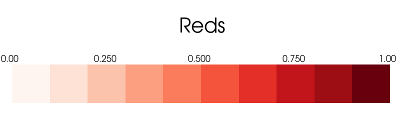 Plot the default colormap with 1024 values.
>>> import pyvista as pv >>> lut = pv.LookupTable() >>> lut.n_values = 1024 >>> lut.plot()
- property nan_color: Optional[Color]#
Return or set the not a number (NAN) color.
Any values that are NANs will be rendered with this color.
Examples
Set the NAN color to
'grey'.>>> import pyvista as pv >>> lut = pv.LookupTable() >>> lut.nan_color = 'grey' >>> lut.plot()
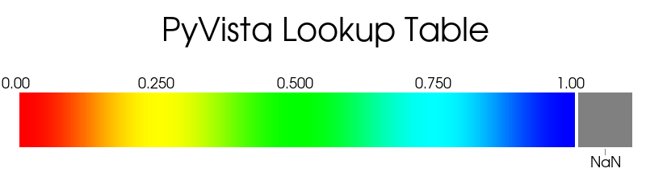
- plot(**kwargs)[source]#
Plot this lookup table.
- Parameters:
- **kwargs
dict,optional Optional keyword arguments passed to
pyvista.Plotter.show().
- **kwargs
Examples
Plot the
"viridis"colormap with the below and above colors.>>> import pyvista as pv >>> lut = pv.LookupTable('viridis', n_values=8) >>> lut.below_range_color = 'black' >>> lut.above_range_color = 'grey' >>> lut.nan_color = 'r' >>> lut.plot()
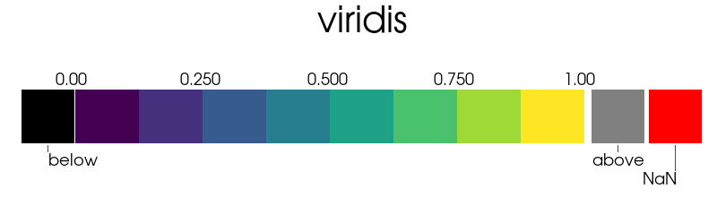 Plot only
"blues"colormap.>>> import pyvista as pv >>> lut = pv.LookupTable('blues', n_values=1024) >>> lut.plot()
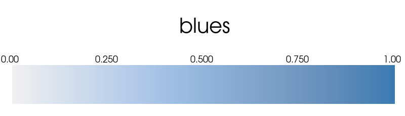
- property ramp: str#
Set the shape of the table ramp.
This attribute is only used when creating custom color maps and will return
Nonewhen a color map has been set withLookupTable.cmap. This will clear any existing color map and create new values for the lookup table when set.This value may be either
"s-curve","linear", or"sqrt".The default is S-curve, which tails off gradually at either end.
The equation used for
"s-curve"isy = (sin((x - 1/2)*pi) + 1)/2, For an S-curve greyscale ramp, you should setLookupTable.n_values`to 402 (which is256*pi/2) to provide room for the tails of the ramp.The equation for the
"linear"is simplyy = x.The equation for the
"sqrt"isy = sqrt(x).
Examples
Show the default s-curve ramp.
>>> import pyvista as pv >>> lut = pv.LookupTable() >>> lut.hue_range = (0.0, 0.33) >>> lut.ramp = 's-curve' >>> lut.plot()
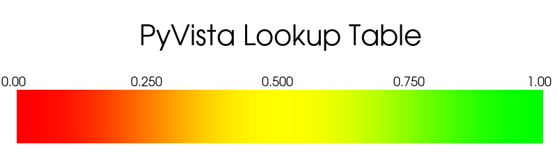 Plot the linear ramp.
>>> import pyvista as pv >>> lut = pv.LookupTable() >>> lut.hue_range = (0.0, 0.33) >>> lut.ramp = 'linear' >>> lut.plot()
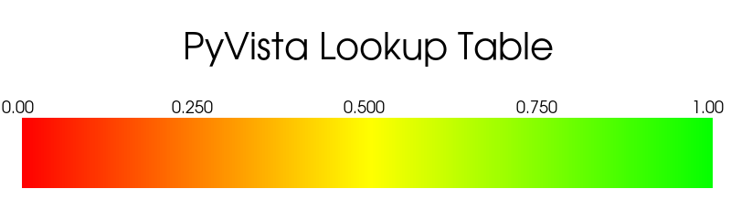 Plot the
"sqrt"ramp.>>> import pyvista as pv >>> lut = pv.LookupTable() >>> lut.hue_range = (0.0, 0.33) >>> lut.ramp = 'sqrt' >>> lut.plot()
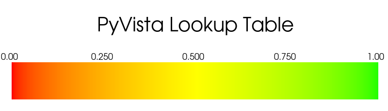
- rebuild()[source]#
Clear the color map and recompute the values table.
This is called automatically when setting values like
LookupTable.value_range.Notes
This will reset any colormap set with
LookupTable.apply_cmap()orLookupTable.values.
- property saturation_range: tuple#
Return or set the saturation range.
This range is only used when creating custom color maps and will return
Nonewhen a color map has been set withLookupTable.cmap.This will clear any existing color map and create new values for the lookup table when set.
Examples
Create a custom “blues” lookup table that increases in saturation.
>>> import pyvista as pv >>> lut = pv.LookupTable() >>> lut.hue_range = (0.7, 0.7) >>> lut.saturation_range = (0.0, 1.0) >>> lut.plot(background='grey')
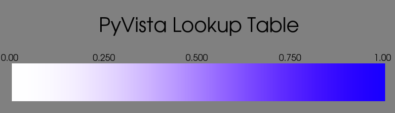
- property scalar_range: tuple#
Return or set the table range.
This is the range of scalars which will be mapped to colors. Values outside of this range will be colored according to :attr`LookupTable.below_range_color` and :attr`LookupTable.above_range_color`.
Examples
>>> import pyvista as pv >>> lut = pv.LookupTable() >>> lut.scalar_range = (0, 10) >>> lut.scalar_range (0.0, 10.0)
- to_color_tf() vtkColorTransferFunction[source]#
Return the VTK color transfer function of this table.
- Returns:
vtk.vtkColorTransferFunctionVTK color transfer function.
Examples
>>> import pyvista >>> lut = pyvista.LookupTable() >>> tf = lut.to_color_tf() >>> tf <vtkmodules.vtkRenderingCore.vtkColorTransferFunction(0x339bd40) at 0x7ffabf634700>
- to_opacity_tf()[source]#
Return the opacity transfer function of this table.
- Returns:
vtk.vtkPiecewiseFunctionPiecewise function of the opacity of this color table.
Examples
>>> import pyvista >>> lut = pyvista.LookupTable() >>> tf = lut.to_opacity_tf() >>> tf <vtkmodules.vtkCommonDataModel.vtkPiecewiseFunction(0x32fa410) at 0x7fe963d6d5e0>
- property value_range: Optional[tuple]#
Return or set the brightness of the mapped lookup table.
This range is only used when creating custom color maps and will return
Nonewhen a color map has been set withLookupTable.cmap.This will clear any existing color map and create new values for the lookup table when set.
Examples
Show the effect of setting the value range on the default color map.
>>> import pyvista as pv >>> lut = pv.LookupTable() >>> lut.value_range = (0, 1.0) >>> lut.plot()
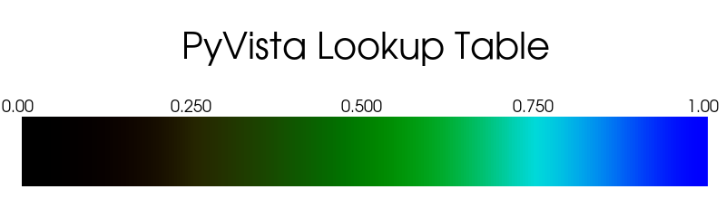 Demonstrate a different value range.
>>> import pyvista as pv >>> lut = pv.LookupTable() >>> lut.value_range = (0.5, 0.8) >>> lut.plot()
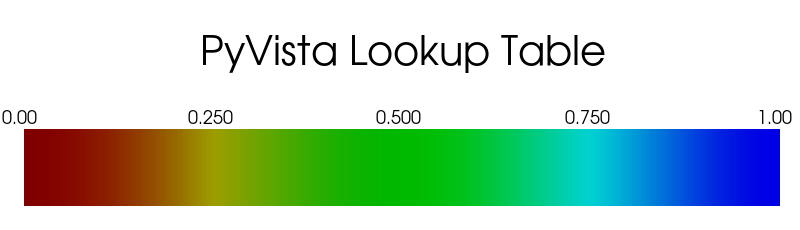
- property values: lookup_table_ndarray#
Return or set the lookup table values.
This attribute is used when creating a custom lookup table. The table must be a RGBA array shaped
(n, 4).Examples
Create a simple four value lookup table ranging from black to red.
>>> import pyvista as pv >>> lut = pv.LookupTable() >>> lut.values = [ ... [0, 0, 0, 255], ... [85, 0, 0, 255], ... [170, 0, 0, 255], ... [255, 0, 0, 255], ... ] >>> lut.values lookup_table_ndarray([[ 0, 0, 0, 255], [ 85, 0, 0, 255], [170, 0, 0, 255], [255, 0, 0, 255]], dtype=uint8) >>> lut.plot()
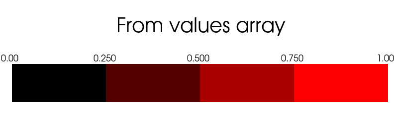